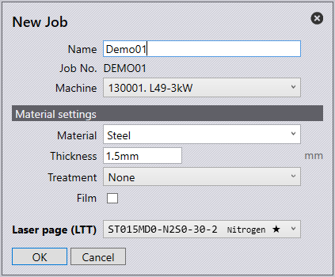

Basic Workflows
TecZone Laser
TecZone Laser is a sheet-metal cutting software for Laser machines.
A 2D sheet metal flat can be cut using a high power laser before it is sent to a press-brake or panel bender for further processing. Here is some of the work that TecZone Laser can do:
-
Compute a feasible and optimal cutting sequence.
-
Compose cut tooling stations from the available inventory of laser tools.
-
Compose several different nesting operations.
-
Generate NC Code that can be transmitted to the laser machine for cutting.
-
Generate reports for the cutting process.
Workflow Types
-
Part workflow focuses on producing a single part.
-
Job workflow focuses on producing different parts in a nest.
Part Workflow
-
Click on the Workflow icon in the command bar on the left to open the workflow panel.
-
Click on the Laser Tech process node in the workflow panel.
-
Click on the Quick Nest process node.
-
Click the close button to close the workflow panel.
Here is a faster way to do the above steps, using keyboard shortcuts:
-
Press W to open the workflow panel.
-
Press L to switch to Laser tech.
-
Press N to do quick nesting.
-
Press Esc to close the workflow panel.
Job Workflow

-
To start a new job, select the New Job icon found on the left side of the launch screen or press Alt F N J.
-
Fill in the Name and Job No. for the given job.
-
The Machine drop-down menu will display the available machine list to run the job.
-
The Material drop-down menu will display the available materials to run the job.
-
The Thickness option is to specify the thickness of the sheet.
-
The Treatment drop-down menu is to specify whether the material has any treatment.
-
Select the Film checkbox if the material has a protective film.
-
The laser page (LTT) drop-down is to select a technology table to use, this is useful if you wish to switch between different gas types on the machine.
-
Click OK to see pages for Job, Sheets, Parts, Layouts, and Summary settings.
Keyboard shortcuts:
Job |
I |
Sheets |
S |
Parts |
P |
Layouts |
L |
Summary |
U |